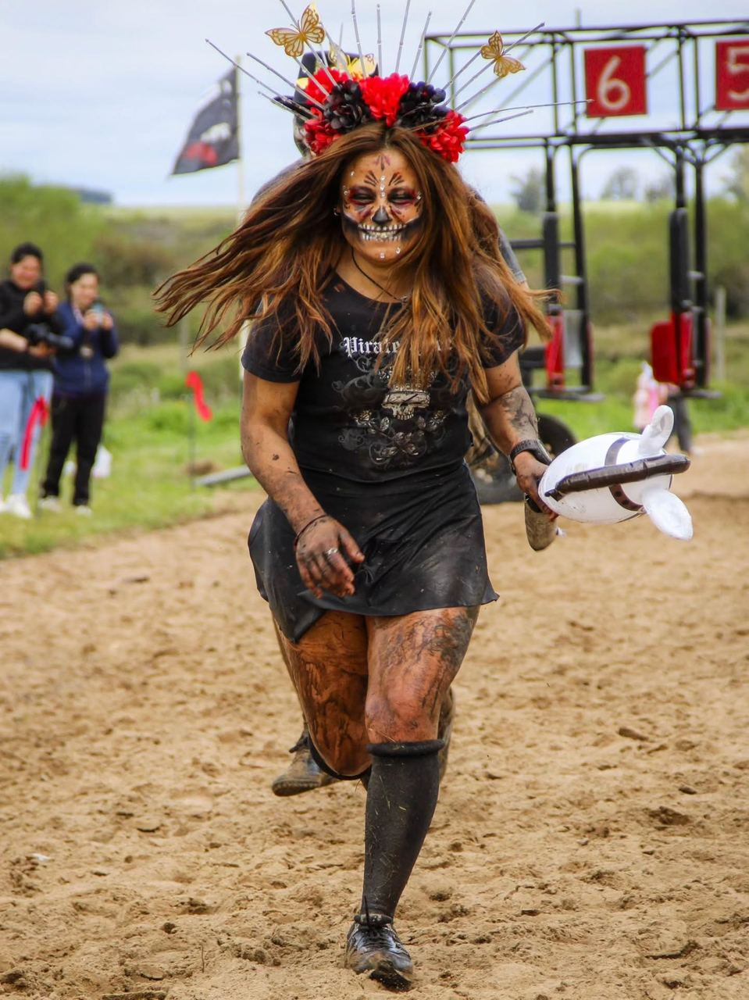
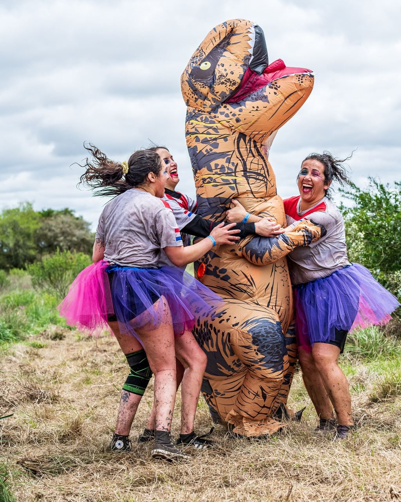
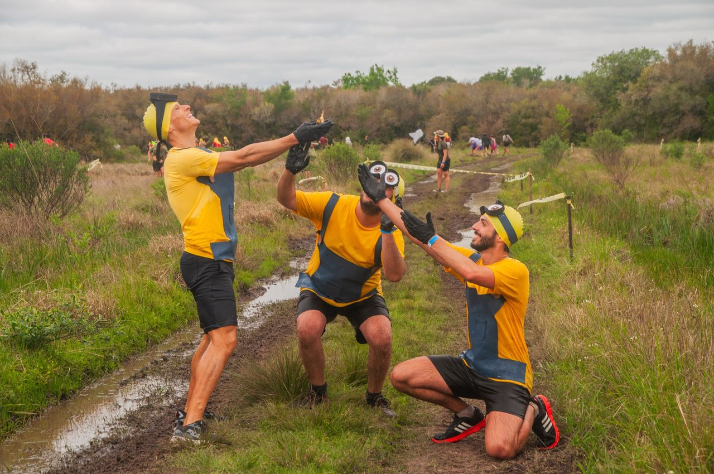
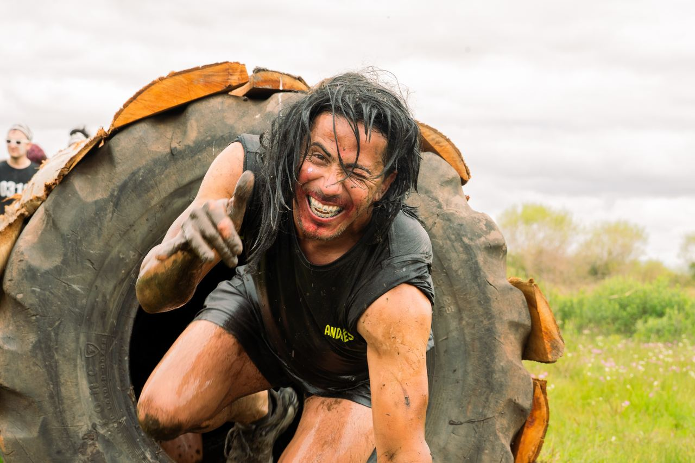
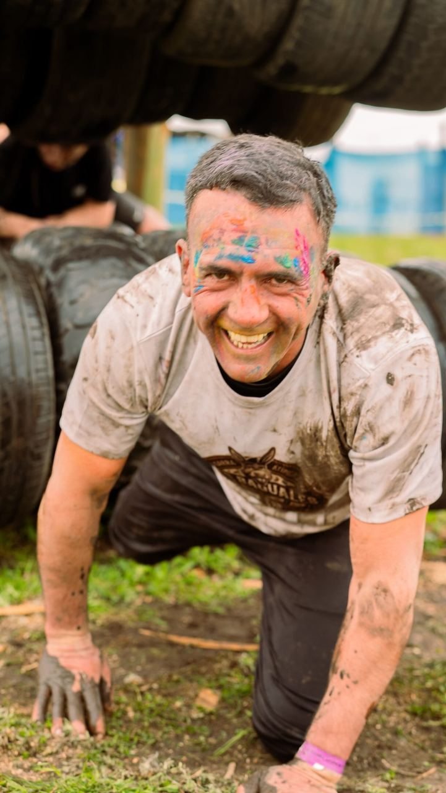
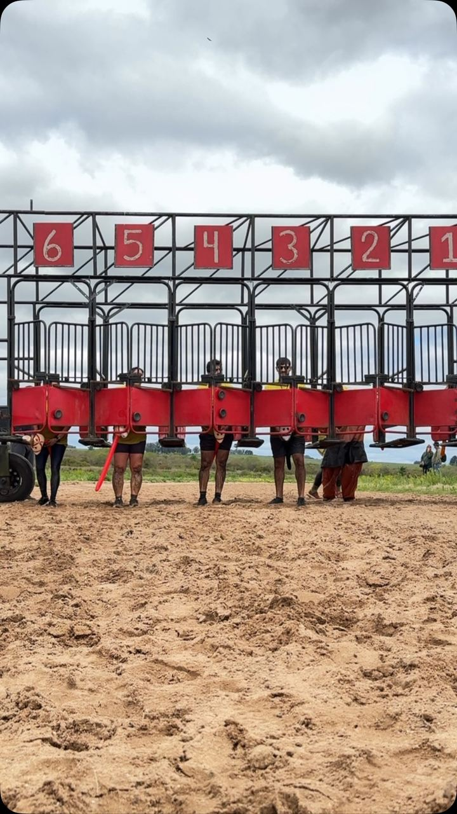

Edición finalizada
Atípica
Celebramos los 150 años de Sarandí del Yí con una nueva edición.
Fecha11 de octubre
LugarVilla Hípica, Sarandí del Yí
EstadoEdición finalizada

La experiencia
Una aventura diferente
La Garra Atípica te invita a recorrer un circuito con obstáculos creativos, propuestas inesperadas y una identidad inspirada, en parte, en el mundo ecuestre.
Ruedos, trepadas, pruebas de destreza y un recorrido diseñado para sorprenderte en cada paso hacen de esta edición una aventura diferente, donde el trabajo en equipo y las ganas de disfrutar son los verdaderos protagonistas.
Lo mejor de Atípica es descubrir cada obstáculo junto a tu equipo, superar cada prueba y llevarte recuerdos que quedan para siempre.
Una propuesta intensa, divertida y completamente ATÍPICA, donde cada obstáculo sorprende, cada desafío se disfruta y cada momento compartido se transforma en un recuerdo inolvidable.
Galería
Así se vive




